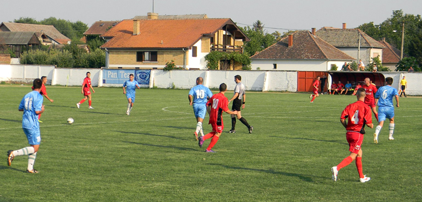

Potreban ti je samo izvod iz matične knjige rođenih i 2 slike!
U najkraćem roku nakon tvog podnetog zahteva možeš očekivati svoju fudbalsku knjižicu tzv. registraciju i možeš da počneš svoju fudbalsku karijeru.
Ukoliko je jedan od roditelja nezaposlen ili oba, moguć besplatan upis. U suprotnom upis košta 2000 dinara.
Pronađi nas ovde!Nakon uspešnih pregovora menadžment fudbalskog kluba Ljukovo je uspeo da usreći svoje navijače i najzad zakrpilo rupu na sredini terena dovođenjem Miladina Bjelića iz Novog Sada, trenutno nije član ni jednog kluba što je dodatno olakšalo posao upravi da ga dovede.
Iako je bio bez aganžmana može se reći da je igrač na koga se može računati u naprednom periodu, jer svi se sećaju njegovih sjajnih partija iz prošle sezone za omladinsku selekciju reprezentacije Srbije.
| Datum | Domaćin | Rezultat | Gost | ... |
|---|---|---|---|---|
| 28.10. | FK Ljukovo | 2:1 | FK Brestač | |
| 20.10. | FK Hajduk Beška | 3:2 | FK Ljukovo | |
| 14.10. | FK Ljukovo | 4:0 | FK Železničar | |
| 14.10. | FK Ljukovo | 4:0 | FK Železničar | |
| 07.10. | FK Partizan Vitojevci | 2:2 | FK Ljukovo | |
| 30.09. | FK Ljukovo | 1:3 | FK Donji Srem |
| RB | Tim | Bodovi |
|---|---|---|
| 1 | FK Radnički Šid | 29 |
| 2 | FK Budućnost Salaš Noćajski | 27 |
| 3 | FK Donji Srem Pećinci | 26 |
| 4 | FK Ljukovo | 26 |
| 5 | FK Partizan Vitojevci | 25 |
| 6 | FK Mitros Sremska Mitrovica | 19 |
| 7 | FK Hajduk Beška | 19 |
| 8 | FK Donji Petrovci | 18 |
| 9 | FK Železničar Inđija | 18 |
| 10 | PSK Putinci | 16 |
| 11 | FK Hajduk Višnjićevo | 15 |
| 12 | LSK Laćarak | 11 |